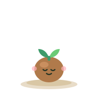
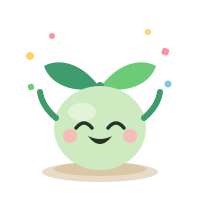
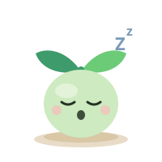

💛 Mood
Done today ✓How are you feeling right now? There's no wrong answer.
your tiny self-care friend · Live Well

This little friend grows when you take small moments to care for yourself — a glass of water, a stretch, an honest check-in. No pressure, no guilt. Just gentle growing, together.
Rootling is a small pet that lives on this device. It helps you take small steps to care for yourself. A glass of water counts. A short rest counts. There is no score. Your pet is never sad if you miss a day.
Kept on this device:
Optional, off unless you turn it on:
These are the real switches. What you pick here is what happens.
Reminders: off. Rootling does not send reminders unless you turn them on later, in the app, in the Alerts card.
Analytics: Rootling collects none. There is no switch, because there is nothing to switch off. (Analytics means counting how people use an app. Rootling does not do that.)
You do not need to share medical diagnoses, financial information, passwords, or anything private for Rootling to help you. Write only what you are comfortable keeping on this device.
A diagnosis is the name a doctor gives to a health problem. You never need to write one here.
Your choices will be listed here.
Your pet, check-ins, and anything it learns stay on this device. Your account lives on this device too — it is never sent anywhere, and signing in just opens your own space here. Optional connected helpers are off by default, are labeled where they appear, and each one explains exactly what it touches before you turn it on.
Rootling is a self-care companion — not a medical device, not therapy, and not a substitute for professional care. If things ever feel like too much, you deserve support from a person: in the US, call or text 988 — the Suicide and Crisis Lifeline — any time, day or night.
What is this app? Rootling is a small pet on this device. You do small kind things for yourself. Your pet grows a little as you do.
Tap a line below. Then tap Show me. Rootling will take you to that part.
Check-ins: Tap one small card. That is all. One is enough.
Today card: It shows your one thing for today. It also shows what is next.
Focus: Sit with your pet. Work on one thing. A timer shows the time. You can stop at any time.
Plans and reminders: Your pet holds your plans for the day. Reminders stay off until you turn them on.
Grounding tools: These help in a wobbly moment. Pick one. You can stop at any time.
Settings: Change how your pet helps you. You can change things back at any time.
Support now — if things feel like too much, tap this. It has calm tools and your own list of people to call or text.
It looks like this might be frustrating. Would you like me to show you?
Training, but make it a story. Tap one to go there.
Your collection. Bringing a companion to Home is free, and your main companion stays yours until you pick a new one.
One day, companion packs and extra slots may be offered as extras. Nothing here is locked today: every companion you adopt is fully yours.
Your main companion is the one who greets you on Home and speaks for your check-ins.
Only want a new name? You do not need a new companion for that — renaming is free and takes one tap.
What is this? This card shows what matters most right now. Just this. Nothing else.
New here? Pick one check-in below — that is all Rootling asks. Your pet grows a little each day you do any one of them.
My one thing for today:
No one thing yet. You can add one below.
Now: Nothing scheduled. A gentle day.
The same four check-ins as always. Nothing new will appear later.
Most check-ins take less than a minute. Today is finished when these four are done — or when you decide to stop. Both count as the end of today.
What is this? This part holds your plans for today. It helps you work on one thing at a time.
How long? Tap one, or write your own number of minutes.
Your pet holds these plans. You do not have to hold them in your head.
No plans yet today.
What is the very first tiny step?
Make it small. Small enough to do in about 15 minutes or less.
This step:
Your saved tasks
For wobbly moments. Pick whichever tool helps you — they are listed in no special order, and none of them is the "right" one. Slow, quiet, and you can stop at any point — leaving is always allowed, and stopping changes nothing.
About paced breathing: it focuses on your breath. If that ever feels worse, stop straight away and pick a different tool.
Any one of these is enough. Small counts. Each check-in gives your companion a little sunshine — once a day each.
How are you feeling right now? There's no wrong answer.
A glass of water is a small kindness to yourself.
0 of 8 glasses today
A walk to the mailbox counts. So does dancing in the kitchen.
Roughly how long did you sleep last night? A guess is fine.
🎉 All four check-ins done — what a lovely day of care. Rootling is glowing.
What is this? Tap the button if things feel like too much right now. A short, calm page opens.
You are here. Take your time. Pick one thing.
I am an AI support tool and not a medical professional. If you are experiencing a crisis, contact emergency services, a healthcare provider, or a trusted person immediately.
In the US, call or text 988 — the Suicide and Crisis Lifeline — any time, day or night.
I am concerned about your safety.
Are you safe right now?
Support: Support contact details will appear here once they are set up.
In the US, call or text 988 — the Suicide and Crisis Lifeline — any time, day or night.
The note says, word for word:
30
I am preparing to contact your emergency contact.
A notification will be sent in 30 seconds unless cancelled.
I am about to notify your emergency contact.
Do you want me to continue?
Location sharing should help you feel safer, never watched. Rootling asks first, each time.
Who sees it: only the contact you pick.
When: only when you share it.
How long: the time you pick.
How to stop: turn the Location sharing switch off, or tap Stop.
Would you like to share your location with your emergency contact?
Location is only as exact as your phone reports. It can be a few streets off.
New location notes go out only while Rootling is open.
How long will you share?
What is this? Add a person you trust. Then you can call or text them with one tap.
Rootling never calls or texts anyone for you. These buttons are here so you can reach someone fast.
What is this? You choose if alerts are on, who gets them, and the exact words of the note. Nothing goes out unless you tap each step yourself.
No emergency contact picked yet.
Your alert note, word for word:
Location sharing is off unless you turn it on. It is never asked for when you first meet Rootling.
This list says when you shared, who with, and for how long. It never keeps the place itself.
Delete the whole sharing history? This cannot be undone.
What is this? Pick the plan that fits today. You can change it at any time.
A Low Day is a plan you picked. It is not a bad day. Rest is a good end to a Low Day.
What is this? On a Low Day, these few things are the whole day. Doing them is a full day.
What is this? Now is the one thing for now. Next is the thing after it. Later is the rest of today.
Now
Next
Later
What is this? A routine is a list of steps, in order. Rootling shows you one step at a time.
Tap Start to use a routine. Tap Delete routine to take it off the list. Delete cannot be undone, so tap it only if you are sure.
What is this? Tap words that fit how you feel. You can tap one, many, or none.
Naming a feeling can make it a little smaller. Pick any that fit — or none.
What is this? Write a worry down. Rootling keeps it here. You do not have to hold it in your head.
No worries parked.
Re-checking can make worries feel bigger. It's parked safely — it will keep until Worry Time.
What is this? Write a few words about your day. Only you can read this. It stays on this device.
You can write about your day, or leave this blank. Both are fine.
Tap Delete under an entry to take it off the list. Right after, you can tap Undo to put it back.
What is this? Write a letter you will not send. Get the words out. Rootling never sends it.
Tap Delete under a letter to take it off the list. Right after, you can tap Undo to put it back. If a letter is ready, you can mark it. You send it yourself, if you choose. Rootling never sends it.
What is this? A short note about sound, light, and your body right now. Some call this a sensory check-in. There are no right words.
Tap the words that fit right now. You can tap one, many, or none.
What is this? Add a word you do not want to see. Short notes in these cards with that word will not show.
Your own words always show. Help words and the 988 line always show. This list stays on this device.
What is this? This page shows your time with Rootling, and gives you calm break ideas.
Rootling can only count time while Rootling is open. This page never counts time on other apps.
Technology should improve life, not replace it. Breaks are a good part of a day.
Reminders ask. They never force. There is no sound and nothing flashes.
How often should Rootling ask?
How is your energy right now?
Pick one small thing. One is enough.
This picture only grows. Nothing here goes down.
A new day starts empty. Empty is fine.

Stickers you earn stay on this shelf. They never go away.
No stickers yet. Your first break or challenge will add one.
Tap the big button. Rootling shows one activity at a time.
How should Rootling pick?
Pick one kind:
Did you complete this activity?
Any attempt counts as success. The goal is participation, not perfection.
These are offers, not jobs. Pick one only if you want to.
Pick a time, if you like:
Pick a size, in your own words:
Pick any aims you like. You can pick more than one, or none.
A grown-up using this phone or tablet can see this same page. Nothing here is hidden, and nothing extra is shown to them.
There is no other page for grown-ups. This panel shows the same reminder settings and the same aims as above.
Change one choice at a time, any time. Nothing here resets on its own, nothing is recorded about why you changed it, and you never have to explain a change.
Your main companion greets you on Home.
Renaming is free and takes effect at once, everywhere. Choosing a new main companion never removes the old one — they stay in your collection with everything they have grown.
Accounts live on this device only.
Your account keeps your companions in their own space on this device, away from anyone else who uses it. Nothing about your account is sent anywhere. Cloud accounts — with Google, Apple, or Microsoft sign-in — arrive with the connected version of Rootling.
Companion form (your name, sunshine and history stay exactly the same):
Everything below lives only on this device. Your companion adjusts its support style — it never diagnoses you and never gives you a label you didn't choose.
Your chosen support style always comes first — learning only fills in where your style is silent, and every adjustment is listed here as it happens. Turning learning off in settings stops anything new being learned; what is already here stays until you forget it below.
Memory details load with this view.
Rootling asks your browser to keep its storage persistent the first time it runs, and nothing your pet remembers is ever deleted automatically. A browser can still clear site data — if you clear it, or under heavy storage pressure — so the backup below is the copy you control. It is also how your pet's memory moves with you if Rootling later becomes an app-store app: same file, restored, nothing starts over.
The purpose of memory is to provide better support, not surveillance.
This book keeps your good moments and the things your pet remembers. You can see each one. You can change each one. You can delete each one.
'Right now' memories fade after 30 days unless you keep them. 'Kept for later' memories stay until you delete them.
Your pet's memory is off. When you turn memory on, this book will keep your keepsakes and the things your pet remembers, where you can see them.
Each line says what it is, why it is here, and when it last changed.
Nothing here right now.
Nothing kept for later yet.
Your pet noticed these. While memory is on, they are kept here where you can see them. You can Forget any of them any time. Tap Keep to file one with your kept memories.
Nothing here yet.
These have not changed in a long time. Keep them, or forget them. It is your tap, always.
Nothing here yet. As you use Rootling, gentle notes like these may appear — only when your book backs them up.
Your pet only says these when your own book backs them up.
Good moments, kept safe. Rootling never takes a keepsake away. Only you can delete one.
No keepsakes yet. Your first ones will show here.
Words you choose to share. You do not have to fill any of this in.
This page shows what Rootling keeps, and gives you the switches to download it or delete it.
Reminders: off.
Pet memory (learning): off.
What Rootling keeps on this device will be listed here.
Your Rootling account lives on this device only, and it is never sent anywhere. Signing in just opens your own space on this device — your information stays here.
Support: Support contact details will appear here once they are set up.
This deletes your pet, check-ins, and everything Rootling keeps on this device. It cannot be undone. Your downloaded backup file, if you made one, is yours to keep or delete.
Last updated: October 15, 2026. This page is the whole policy. There is no longer version hidden somewhere else.
Rootling keeps things on this device only. It keeps:
Some memories in your Memory Book are marked "Right now". After 30 days, Rootling points at them and asks if you want to keep them for later. Nothing is deleted unless you tap Forget.
These things are kept in your browser's storage, on this device. A browser is the app you use to open web pages, like Chrome or Safari.
So your pet can be your companion. That is the only reason. Your pet needs its name, your check-ins, and your choices so it can greet you and keep growing with you.
Things are kept until you delete them. Rootling does not delete your pet or your check-ins on its own.
One thing is not in Rootling's control: your browser can clear site data. Site data means the things a web page stores on your device. If you clear it, or if your device runs very low on space, your browser may remove what Rootling keeps. That is why the backup file matters: the backup file is the copy you control. Keep it somewhere safe if you want a copy that no browser can take away.
Rootling is a self-care companion. It is not a medical device, not therapy, and not a substitute for professional care. It does not diagnose or treat any condition. Diagnose means to name a health problem; Rootling never does that.
If things ever feel like too much, you deserve support from a person: in the US, call or text 988 — the Suicide and Crisis Lifeline — any time, day or night.
Rootling is made for adults and older teens. If you are under 18, please use it with a parent or guardian who knows you are using it. A guardian is an adult who cares for you and is in charge of your safety.
Today, your account lives on this device only. It holds your name, your email, and your password kept scrambled — never as plain words. It is never sent anywhere, and your email is never checked or written to.
The AI can remember details you choose to share in order to provide better support. You remain in control and can view or delete memories at any time.
If anything about how Rootling looks or works ever changes, it will be written here first, in plain words: what will change, when it will change, and what will stay the same.

You paused Rootling. Nothing changed. You can come back whenever, or not at all.
Social Coach
Practise words for real life. There are no wrong answers here.
The goal is not to change who you are. It is to help you understand people, and say what you mean, as yourself.
Everything here stays on this device. Rootling never sends a message for you.
Words you can use
Tap a time in life. Words for that time will show.
Guided practice
Guided practice. Your pet reads the other part from a script. It is not a real chat.
Things you might notice
Tap one thing. You will see what it could mean.
One sign can mean more than one thing. Only the person knows for sure.
Think about a message
Only the person who sent it knows for sure what they meant. This page helps you think of possibilities.
Help me say it
Pick a kind of words. Fill in the gaps with your own words.
Rootling never sends anything. These words are yours to use if you want.
My notebook
Write what took place. There is no judging here.
Brave moments
A brave moment can be small. Sending one message counts.